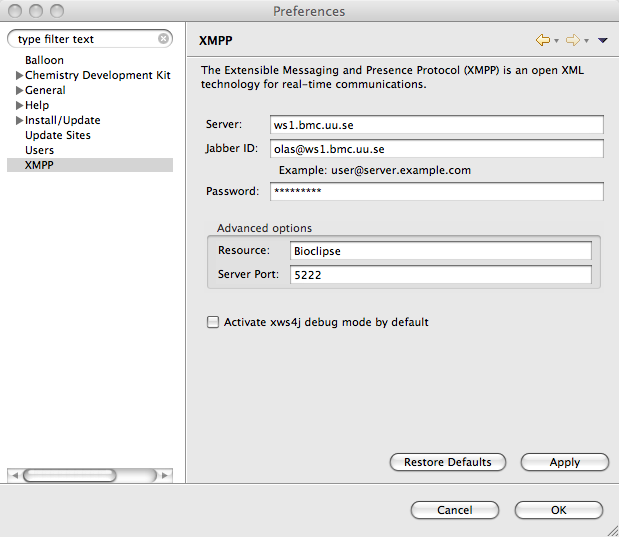
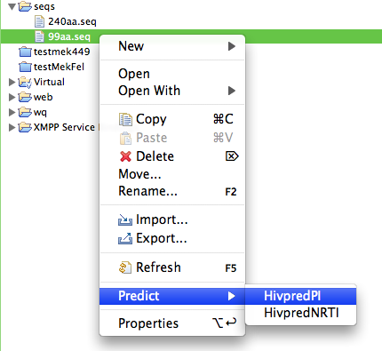
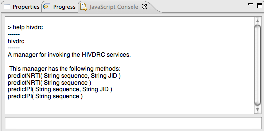
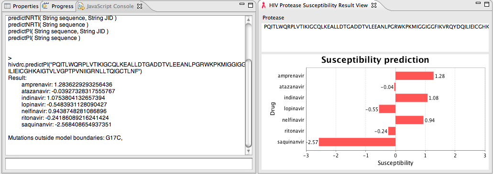
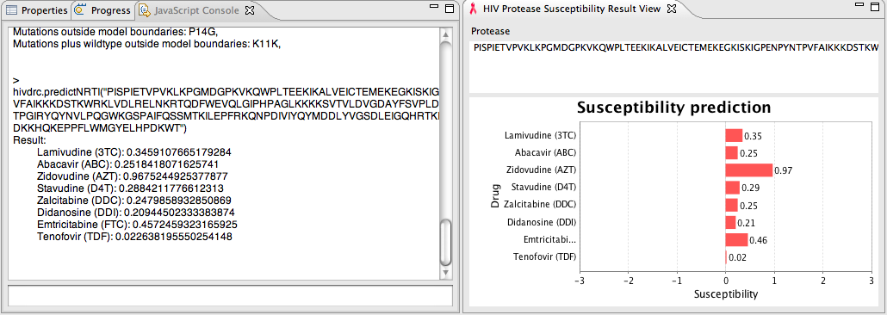

help hivdrc
This shows the available commands for consuming the services.

To predict a PI, enter:
hivdrc.predict("PQITLWQRPLVTIKIGCQLKEALLDTGADDTVLEEANLPGRWKPKMIGGIGGFIK
VRQYDQILIEICGHKAIGTVLVGPTPVNIIGRNLLTQIGCTLNF")
To predict a NRTI, enter:
hivdrc.predict("PISPIETVPVKLKPGMDGPKVKQWPLTEEKIKALVEICTEMEKEGKISKIGPENPYN
TPVFAIKKKDSTKWRKLVDLRELNKRTQDFWEVQLGIPHPAGLKKKKSVTVLDVGDAYFSVPLDKDFRKYTAFTIPSIN
NETPGIRYQYNVLPQGWKGSPAIFQSSMTKILEPFRKQNPDIVIYQYMDDLYVGSDLEIGQHRTKIEELRQHLLRWGFT
TPDKKHQKEPPFLWMGYELHPDKWT")
A sample JavaScript for invoking HIVDRC functionality in Bioclipse is available
as a Gist (versioned snippet), with number 403896.
Bioclipse can easily download these scripts. In the JavaScript console, type:
gist.download(403896)
The file "Gists403896.0.js" is downloaded in a folder "Gists" in the Bioclipse Explorer. Open this file, and click the "Run" button in the toolbar to execute the script.